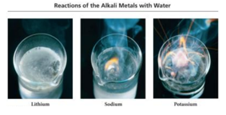
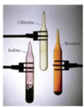
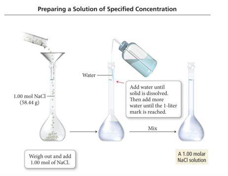
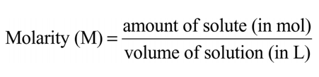
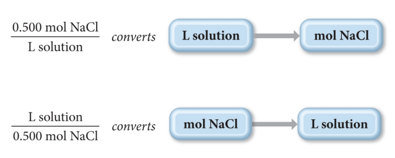
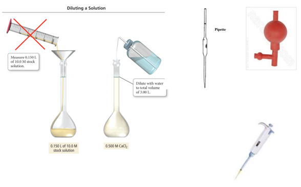

Week 11 - Day 1 (End of Ch 8)
Navigate using audio
Practice Problem: Combustion Reaction How many grams of products are formed during the combustion of 100. g of ethanol? (and how much oxygen is consumed)?
- Audio 0:02:46.104807
Alkali Metal Reaction: A Type of Chemical Reaction
- Audio 0:07:08.868545
- Overview of Alkali Metals:
- The alkali metals (group 1A) have ns1 outer electron configurations.
- Form +1 cation to “achieve” noble gas configuration.
- The reactions of the alkali metals with nonmetals are vigorous.
- Common reaction for alkali metals (M) is with halogens (X)
- 2 M + X2 → 2 MX
- Example: 2 Na(s) + Cl2(g) → 2 NaCl(s)
- The alkali metals react vigorously with water to form the dissolved alkali metal ion, the hydroxide ion, and hydrogen gas:
- 2 M(s) + 2 H2O(l) → 2 M+(aq) + 2 OH–(aq) + H2(g)
- The reaction is highly exothermic and can be explosive because the heat from the reaction can ignite the hydrogen gas.
- 
Halogen Reaction: A Type of Chemical Reaction
- Audio 0:09:58.472842
- Halogen Overview:
- Group 7 elements that have ns2np5 outer electron configurations:
- Mostly form –1 anions (F only forms –1 anion) to achieve the “noble gas configuration”
- Most reactive of the nonmetal elements
- The halogens (X) tend to react with metals especially with Group 1 and 2A metals to form ionic compounds such as metal halides (MXn).
- 2 M + n X2 → 2 MXn
- Example: 2 Fe(s) + 3 Cl2(g) → 2 FeCl3(s)
- The halogens react with hydrogen to form hydrogen halides.
- H2( g) + X2 → 2 HX(g)
- 
Clicker 1
- Audio 0:14:33.764259
- Two samples of calcium and fluoride are decomposed into their constituent elements. The first sample showed that the yield of products was 100% (really!). If the second sample produced 294 mg of fluorine, how many g of calcium were formed? (Ca: 40.08, F: 19.00)
- A) 0.280 g
- B) 3.10 * 10^2 g
- C) 3.13 g
- D) 0.310 g
- E) 2.80 * 10^2 g
- Audio 0:17:21.888102
- End of chapter 8
Chapter 9
- Introduction to Solutions & Aqueous Reactions
Why a whole “introductory” chapter on chemistry in water?
- Audio 0:18:22.136923
- Water is ubiquitous: human body is 50-65% water
- Water is (relatively) cheap
- Water is a good solvent
- Many reactions go faster in water
Solution Concentration and Solution Stoichiometry
- Audio 0:20:23.634573
- When table salt is mixed with water, it seems to
disappear or become a liquid, and the mixture is
homogeneous.
- The salt is still there, as you can tell from the taste or simply boiling away the water.
- Homogeneous mixtures are called solutions.
- The component of the solution that changes state is called the solute.
- The component that keeps its state is called the solvent.
Solution Concentration: Categories
- Audio 0:22:26.471631
- Dilute solutions have a small amount of solute compared to solvent.
- Concentrated solutions have a large amount of solute compared to solvent
- Can also describe Quantitatively
OLD Solution Concentration: Molality
- A (not so) common way to express a solution concentration is molality (M).
- Molality is the amount of solute (in moles) divided by the mass of solvent (in kg). CH102
Solution Concentration: Molarity
- Audio 0:23:35.675700
- 
Solution Concentration: Molarity
- Audio 0:25:57.189268
- A common way to express a solution concentration is molarity (M).
- Molarity is the amount of solute (in moles) divided by the volume of solution (in liters).
- 
Using Molarity in Calculations
- Audio 0:26:25.553273
- The molarity of a solution can be used as a conversion
factor between moles of the solute and liters of the
solution.
- For example: A 0.500 M NaCl solution contains 0.500 mol NaCl for every liter of solution.
- 
Practice Problem: Calculating Concentrations
- Audio 0:28:53.770758
- What is the molarity of a solution made by dissolving 25.5 g of KBr in enough water to give 1.75 L of solution?
Clicker 2
- Audio 0:32:28.311372
- Determine the molarity of a solution formed by dissolving 97.7 g LiBr in enough water to yield 750.0 mL of solution. (Li: 6.941, Br: 79.90)
- A) 1.50 M
- B) 1.18 M
- C) 0.130 M
- D) 0.768 M
- E) 2.30 M
Practice Problem: Calculating Concentrations
- Audio 0:34:48.656203 How many liters of a 0.125 M NaOH solution contain 0.255 mol of NaOH?
Solution Dilution: Making a Solution from a Solution: C1·V1 = C2·V2
- Audio 0:37:43.525017
- A dilution is when a new solution is prepared from a stock solution (more concentrated solution).
- To make solutions of lower concentrations from these stock solutions, more solvent is added.
- The amount of solute doesn’t change; just the volume of solution changes:
- moles solute in solution 1 = moles solute in solution 2
- The concentrations and volumes of the stock and new solutions are inversely proportional.
- The amount of solute doesn’t change; just the volume of solution changes:
- The mathematical relationship is C1·V1 = C2·V2, or if the concentration unit is Molarity, then it can be written as M1·V1 = M2·V2.
Preparing 3.00 L of 0.500 M CaCl2 from a 10.0 M Stock Solution
- Audio 0:40:33.998639
- 
Practice Problem: Calculating Concentrations To what volume should 0.200 L of 15 M NaOH solution be diluted to give a 3 M NaOH solution?
- Audio 0:42:51.333854
Clicker 3
- Audio 0:47:55.628953
- What is the concentration of HCl in the final solution when 65 mL of a 9.0 M HCl solution is diluted with pure water to a total volume of .15 L?
- A) 2.1 × 10-2 M
- B) 3.9 M
- C) 21 M
- D) 3.9 × 10^3 M
Vocab
| Term | Definition |
|---|---|
| solution | homogeneous mixtures |
| solute | component of solution which changes state |
| dilute solutions | solutions which have a small amount of solute compared to solvent |
| molarity | amount of solute (in moles) divided by the volume of solution (in liters) |